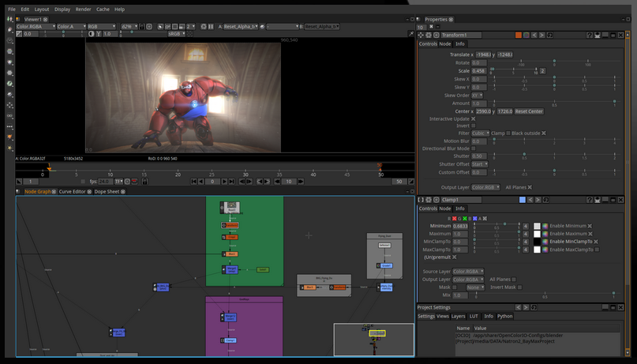
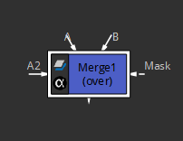

Natron is a free, libre (Open Source) GPLv2 licensed compositing and visual effects program stylized after nuke. It works on Microsoft Windows, Apple MacOS, and GNU/Linux.
Natron In Action.There are 3 things to note about the above natron interface:
A node like this:

can be described as like a LEGO brick. You place a piece somewhere and connect them together. This contrasts
very heavily from After Effects, which is layer based.
In my personal opinion, despite the steeper learning curve, nodes are far more flexible than layers. To make it less overwhelming, you can group the nodes together.
I will later be talking about:
Luma-Key Mattes, Chroma-key Mattes, Difference Mattes,
Bump Mattes, Despill, Composite, light warp, add-mix,
Blending modes, Alpha, Colours, RGBA, Pre-Mulitply,
Gamma, image sequences, Log vs Linear, Bit Depth,
HSV, YUV, Bit Depth, Pixels, Channels, Blurring, Sharpening,
Geometric Transformations, Masks, Rotoscoping,
Stabilizer, Blue Screen, Green Screen,
etc, etc.